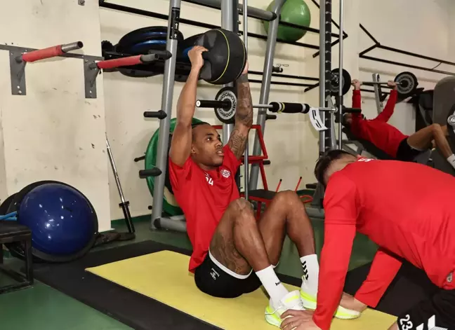

Spor Dünyasından Haberler
İllia Golem öldü mü? İllia Golem neden öldü?
Fiziğiyle bakanların bir daha bakmasına neden olan Belaruslu vücut geliştirici 36 yaşında hayatını kaybetti. İllia Golem öldü mü? İllia Golem neden öldü?
Haberin Devamı

Sivasspor Hatayspor Maçı Hazırlıklarına Devam Ediyor
Sivasspor, Süper Lig'in 9. haftasında sahasında Hatayspor ile karşılaşacak. Takım, hazırlıklarını fitness salonunda koordinasyon ve kuvvet ağırlıklı çalışmalarla sürdürüyor.
Haberin Devamı